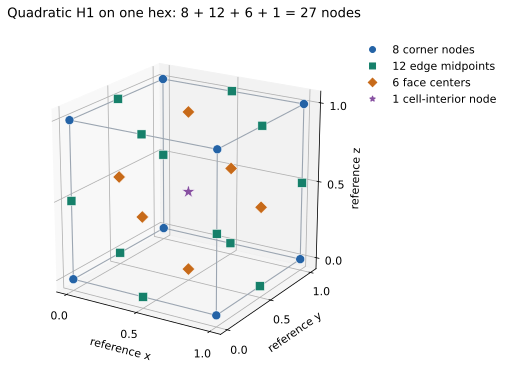
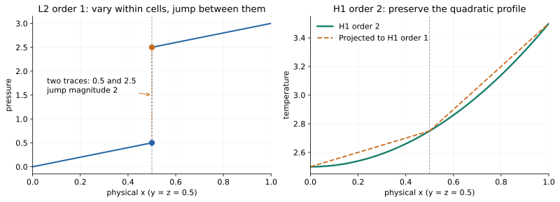
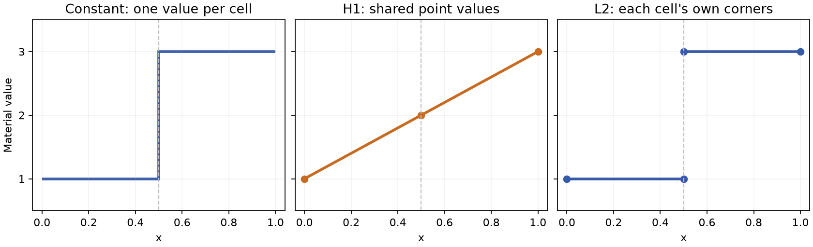

Fields, spaces and implicit arrays¶
A field's space determines which values can disagree and how to evaluate them inside a cell. Moving between spaces changes that interpretation. It can introduce averaging even when the geometry and topology remain the same. Start with Function Spaces and Degrees of Freedom for the meaning of H1, H2, L2 and polynomial order. This chapter applies those ideas to Tack's field and array representations.
For construction recipes, jump to L2 fields or quadratic H1 fields. Both use the same mesh and have runnable examples below.
Choose where values live¶
| Space | Ownership | Use it for |
|---|---|---|
td.H1(data, order=1) |
One shared value per corner vertex | A continuous first-order nodal temperature or velocity |
td.H1(data, order=2) |
Shared corner, edge and supported face/interior nodes | A higher-order H1 approximation; not an H2 space |
td.H1(data, order=p, nodes=...) |
From order 3, on segments, quads and hexahedra: p - 1 per edge, (p - 1)² per face, (p - 1)^d per cell |
Spectral-element and MFEM fields of any order |
td.L2(data, order=p, nodes=...) |
From order 2 (or on Gauss–Legendre nodes): each cell's own (p + 1)^d values |
DG fields of any order |
td.Constant(data) |
One value per cell | Cell averages, material parameters |
td.L2(data) |
Each cell's own corner values | Discontinuous solution fields |
td.Values(data, "faces") |
One value per face, without an interpolation basis | Face areas, labels or fluxes |
td.Values(data, "points" / "cells" / "edges") |
One value per named entity kind | Entity attributes that need no basis |
td.SideTraces(data) |
Values per face, per side, per face corner | Two-sided evaluation, by projecting into it |
For L2(order=0) the value is constant per cell; L2(order=1) uses each
cell's own corners. H1(order=2) adds higher-order degrees of freedom on
supported shapes; higher orders add more of them on the
tensor shapes. Values describes association without promising any
interpolation between entities.
tack.empty((field.space.size,), tack.vec3()) allocates one
3-vector per DOF; td.Field(field.space, values) gives those values their
mesh meaning. The array has shape (field.space.size,) and downloads as
(field.space.size, 3).
The field's coefficient count is field.space.size. It agrees with
data.num_points for H1 order 1, but not generally for other spaces. A
vector field has one vector per space DOF, so the scalar component storage
has that count times the vector width.
Constant means a separate constant function in each cell. ConstantArray
means an array with one repeated value, regardless of space. These two
independent choices can be combined: an H1 field with a ConstantArray is
a spatially constant H1 function, while a Constant field backed by an
ordinary array can assign different values to every cell.
Spaces belong to a topology and are interned there: repeated td.H1(data)
uses the same layout. A field with a matching length on another topology is
still a different association. Wrap values with the correct space when they
are created; do not repair an association by guessing from array length later.
Construct an L2 field¶
The complete independent-spaces example builds
L2 pressure and quadratic H1 temperature on the same two hexes. This section
constructs pressure directly; the next section
constructs temperature. The snippets assume NumPy, Tack and tack.dataset
imported as np, tack and td, with a default device set.
Use uniform_grid as a shortcut for the mesh setup here; Build Meshes
shows its explicit topology and geometry construction:
# Shortcut mesh setup: two adjacent hexes in the unit cube.
data = td.uniform_grid((3, 2, 2), spacing=(0.5, 1.0, 1.0))
Each hex has eight corners. td.L2(data, order=1) assigns a separate value
to each of them: 16 coefficients, even though the topology has only 12 vertices.
The four corners on the shared face each have two pressure coefficients.
They occupy the same physical positions and may have different values. See
the node-sharing diagram.
Initialize each cell's coefficients¶
Construct pressure as p = x in cell 0 and p = x + 2 in cell 1.
It varies inside both cells and has a jump of 2 at x = 0.5. An L2 field need
not be constant inside a cell.
The space supplies offsets: coefficient j of cell c is stored at
offsets[c] + j. For these two hexes, the offsets are [0, 8, 16]:
| Cell | Storage slots | Meaning |
|---|---|---|
| 0 | 0 through 7 | Its own corner values, in the cell's local corner order |
| 1 | 8 through 15 | Its own corner values, including its side of the shared face |
The initialization kernel walks each cell's corners and writes its block. Every coefficient has one writer. Using offsets also works when cells have different corner counts; multiplying the cell id by eight would not.
@tack.kernel
def initialize_pressure(cells, offsets, values):
for c in cells:
cell_id = cells.entity_id(c)
first = offsets[cell_id]
for j in range(cells.NUM_POINTS):
x = cells.corner_position(c, j)
values[first + j] = x.x + 2.0 * cell_id
Allocate the values and attach their space:
pressure_space = td.L2(data, order=1)
pressure = tack.empty((pressure_space.size,))
td.for_each(initialize_pressure, data, "cells", pressure_space.offsets, pressure)
data.fields["pressure"] = td.Field(pressure_space, pressure)
td.for_each supplies the geometry-aware cell view, so corner_position
returns physical coordinates. The resulting Field contains the original
cell-local coefficients; no shared-point averaging is involved.
Copy coefficients from an existing solver array¶
If you already have nodal DG coefficients in this order, upload them directly. For this particular pair of hexes, this constructs the same pressure field:
# Each row follows that hex's local corner order: 0, 1, ..., 7.
per_cell = np.array([
[0.0, 0.5, 0.5, 0.0, 0.0, 0.5, 0.5, 0.0], # cell 0: p = x
[2.5, 3.0, 3.0, 2.5, 2.5, 3.0, 3.0, 2.5], # cell 1: p = x + 2
], dtype=np.float32)
uploaded_pressure = td.Field(pressure_space, tack.array(per_cell.reshape(-1)))
The two eight-value rows describe the cells' local nodes, not eight globally
unique points each. Flattening these rows preserves both interface values.
For a mixed-cell mesh, use pressure_space.offsets and the appropriate local
corner order to assemble the blocks; a rectangular (num_cells, 8) array is
specific to the all-hex example. Coefficients in another basis need conversion
before this upload, as in MFEM import.
A constant inside each cell: L2 order 0¶
Choose order 0 for one independent coefficient per cell:
cell_space = td.L2(data, order=0)
cell_pressure = td.Field(cell_space, tack.array([1.0, 3.0], dtype=tack.f32))
Here cell_space.size is two. Values 1 and 3 are constant inside their own
cells and differ across the interface. td.Constant(data) is another
representation of that piecewise-constant function meaning; it also supports
topologies without reference elements.
Evaluate and check the discontinuity¶
pressure_centers = td.values_at_centers(data, "pressure")
pressure_gradient = td.gradients(data, "pressure")
pressure_jump = td.jump(data, "pressure")
# Centers: [0.25, 2.75]; gradients: [1, 0, 0]; interface jump magnitude: 2.
For the varying order-1 pressure, the cell centers hold [0.25, 2.75] and
both physical gradients are [1, 0, 0]. The one interior face has jump
magnitude 2; jump's sign follows its side ordering. The runnable check
compares the uploaded coefficients with the kernel-initialized ones as well.
These are cell-interior gradients; the interface discontinuity is represented
separately by the jump.
Construct a quadratic H1 field¶
On the same mesh, construct T = x² + 2y + 3z using td.H1(data, order=2).
The geometry stays first-order H1 and still has 12 corner positions.
Temperature has 45 global nodal coefficients, including nodes away from corners.

A single quadratic hex uses three nodes per reference coordinate direction:
the tensor-product layout has 3 × 3 × 3 = 27 nodes. Two adjacent hexes share
nine on their common face: its four corners, four edge midpoints and face center. Thus
27 + 27 - 9 = 45 global DOFs. Count the two-cell mesh by entity as follows:
| Location | Global temperature DOFs |
|---|---|
| Topological corner vertices | 12 |
| Edge midpoints | 20 |
| Face centers | 11 |
| Cell interiors | 2 |
| Total | 45 |
These are field nodes on the original two cells. They do not subdivide the mesh, change corner connectivity, or make its geometry quadratic.
Sample at the field's nodes¶
First define the function to sample:
@tack.func
def quadratic_temperature(x):
return x.x * x.x + 2.0 * x.y + 3.0 * x.z
interpolate evaluates it at every node of the temperature space, where
the geometry puts each one, and returns the field:
temperature_space = td.H1(data, order=2)
# The function at all 45 temperature nodes, not just the 12 corners.
data.fields["temperature"] = td.interpolate(data, quadratic_temperature,
temperature_space)
The space builds local-to-global addressing for shared corners, edges and
faces. Its node numbering is not simply 27 consecutive entries per cell.
interpolate writes a shared node once, from the first cell that has it,
rather than from every adjacent cell, and stores no node positions: each is
evaluated through the geometry as it is needed. To see where the nodes are,
project the geometry into the space
(td.project(data, data.geometry, temperature_space)); that does not change
data.geometry.
Interpolating differs from projecting a first-order solution into a quadratic space: that conversion retains the original first-order function. To represent this quadratic, interpolate it as above, or supply the original quadratic coefficients in Tack's nodal basis and ordering.
Evaluate through the quadratic basis¶
at_centers = td.values_at_centers(data, "temperature")
gradient = td.gradients(data, "temperature")
linearized = td.project(data, "temperature", td.H1(data, order=1))
linear_centers = td.values_at_centers(data, linearized)
At the two cell centers, quadratic evaluation gives [2.5625, 3.0625] and
physical gradients [0.5, 2, 3] and [1.5, 2, 3]. Projecting this temperature
down to H1 order 1 gives center values [2.625, 3.125]. The latter keeps the
corner values but changes the function between them.

Both profiles are evaluated through the fields' actual bases along
y = z = 0.5, including the two separate L2 traces at x = 0.5. The dotted
vertical pressure segment marks the jump, not an interpolated connection.
The geometry and topology are identical for every curve. Quadratic H1
enforces shared values; it does not generally enforce matching derivatives
or H² conformity.
Run the complete program and reproduce all three diagrams:
uv run python docs/examples/data_spaces.py --check
uv run --with matplotlib python docs/examples/data_spaces.py --check --figures /tmp/tack-space-figures
The optional plotting step writes standalone SVG and PNG files. The numerical checks run without Matplotlib.
Higher orders¶
On segments, quads and hexahedra (pixels and voxels too) a space may have any
order. Its nodes are the products of 1D nodes along each axis, chosen by
nodes=: "gauss_lobatto" (the default, MFEM's for H1 and Nek5000's),
"equispaced" (VTK's Lagrange cells, Exodus, gmsh) or, for L2 alone,
"gauss_legendre" (MFEM's default for DG), which has no nodes at a cell's
ends to share. Up to order 2 the first two are the same nodes.
@tack.func
def blob(x):
# A smooth field: its level sets are curved surfaces inside every cell.
return x.x * x.x * x.x - x.y * x.z + 0.5 * x.y * x.y
@tack.func
def bend(x):
# A bend of the mesh: its cells' faces curve.
return [x.x + 0.1 * x.y * x.y, x.y + 0.1 * x.x * x.z, x.z]
data = td.uniform_grid((5, 5, 5), spacing=(0.25, 0.25, 0.25))
space = td.H1(data, order=4) # Gauss-Lobatto nodes by default
data.fields["u"] = td.interpolate(data, blob, space)
print(space, space.size, "values on", data.num_cells, "cells")
An order-4 H1 space on 64 hexahedra holds 17³ = 4913 values: each edge,
face and cell interior has its own, and cells turned any way read a shared
edge or face's values alike. A polynomial of degree 4 in each coordinate is
represented exactly, so the cubic comes back anywhere it is probed. Positions
can be a field of such a space too: a curved geometry, whose cells are located
and evaluated as they are, not as their corners make them.
Filters that cut -- contour, slice, slice_plane -- cut a field above
order 1, or a curved geometry, on linear sub-cells of the cells the cut can
reach: those whose Bernstein coefficients (which bound the field over the
cell) straddle the value.
coarse = td.contour(data, "u", 0.2, subdivision=1) # the cells' corners
fine = td.contour(data, "u", 0.2) # 4 steps, the field's order
within = td.contour(data, "u", 0.2, tolerance=1e-3) # as many steps as that takes
print(coarse.num_cells, fine.num_cells, within.num_cells, "triangles")
By default a cell is cut into as many steps along each axis as the field's
or geometry's order; subdivision=1 is its corners alone, and tolerance=
asks for the fewest steps whose estimated error is within it. A point where
sub-cells of neighbouring cells meet is computed once, so the surface has no
cracks. td.subdivide gives the linear sub-cells of every cell, for export
or for a filter that takes linear cells only:
curved = td.uniform_grid((5, 5, 5), spacing=(0.25, 0.25, 0.25))
curved.geometry = td.interpolate(curved, bend, td.H1(curved, order=3), dtype=tack.vec3())
cut = td.slice_plane(curved, (0.5, 0.5, 0.5), (0.0, 0.0, 1.0))
linear = td.subdivide(curved, 3) # 27 hexahedra a cell
print(cut.num_cells, "triangles;", linear.num_cells, "linear cells")
MFEM fields of any order on quads and hexahedra come across through
tack.interop.mfem, and VTK's Lagrange cells through vtk_to_dataset
(dataset_to_vtk(..., higher_order=True) writes them). Other shapes stop at
order 2 for now.
A material interface exposes the difference¶
The two-cell example has material 1 on the left and 3 on the
right. Converting it to shared point data gives value 2 on the common face.
Converting it to L2 preserves both sides of the discontinuity:

The figure is generated from the example's values along the bottom front edge; the dashed line is the shared face at x = 0.5. The middle ramp is an effect of projection and interpolation, not an interface resolved by the original data. H1 and L2 both use order 1 in this figure.
cell_temperature = td.project(data, "temperature", td.Constant(data))
point_material = td.project(data, "material", td.H1(data))
separate_material = td.project(data, "material", td.L2(data))
gradient = td.gradients(data, "temperature")
The returned objects are fields. Assign one to data.fields[name] if later
filters should carry it. Computing point_material alone does not add it to
the dataset's named fields.
Projection is an algorithmic choice¶
project(data, field, target_space) is the one operation: td.H1(data),
td.Constant(data) and td.L2(data) are the common target spaces.
| Conversion | Meaning | What to check |
|---|---|---|
| H1 → Constant | Mean of each cell's corner values | Not a general volume integral |
| Constant → H1 | Mean of incident cell values at each point | Material discontinuities become shared values |
| H1 → L2 of sufficient order | Evaluate the continuous field at each cell's local nodes | Values remain equal on shared interfaces |
| L2 → H1 | Evaluate from adjacent cells, then average | Jumps can be smoothed |
| Constant → L2(order=1) | Repeat a cell's value at its own corners | Discontinuities remain |
For the affine temperature x + 2y + 3z on the two regular cells, corner
means are [2.75, 3.25], the exact center values. That convenient property
does not establish conservation for general fields or distorted cells.
Polyhedral, polygonal and polyline topologies support point/cell projection.
L2, higher-order projection and traces require the shape-based path. In
particular, being able to attach point values to a polyhedron does not imply
that it supplies shape-function evaluation for every algorithm.
Read both sides of a face¶
face_values = td.project(data, "material", td.SideTraces(data))
material_jump = td.jump(data, "material")
continuous_jump = td.jump(data, "temperature")
Projecting into SideTraces evaluates each cell at its faces' corners, keeping the two sides
separate and aligned in the face's ordering. jump evaluates a difference
at each face center: side 1 minus side 0, or zero at a boundary.
The material has one nonzero jump of magnitude 2. The affine H1 temperature has zero jump. The sign of a material jump depends on the face's side ordering; its magnitude does not. A face normal points out of side 0. These conventions matter when assembling a flux and are developed in Mesh Kernels.
For a normal-oriented face quantity, use Values(data, "faces", oriented=True).
A filter that reverses a carried face then negates the value. Area and labels
are ordinary, unoriented face values and should not change sign.
Values can be computed instead of stored¶
Uniform-grid coordinates need only dimensions, origin and spacing; allocating
three scalars for every point would be redundant. An implicit value array
provides a get(k) expression that Tack inlines into the consuming kernel.
Geometry's space and its implicit array are different layers¶
Both an image and a rectilinear grid have an order-1 H1 geometry field. Its space says how a cell's nodal positions define a coordinate mapping; its implicit value array says how to obtain each nodal position. The two layers can change independently:
| Geometry values | Information retained | How one nodal position is obtained |
|---|---|---|
UniformCoordinates |
Dimensions, origin, spacing and direction | Evaluate the uniform-grid coordinate formula |
CartesianProduct |
Three backend axis arrays | Gather one coordinate from each axis |
Explicit tack.Array with dtype tack.vec3(...) |
One stored 3-vector per geometry DOF | Read the vector |
Calling materialize on image coordinates changes their storage into an
explicit value array; it does not change H1 order, add cells, or turn
StructuredTopology into UnstructuredTopology. Calling to_host creates
a host snapshot without replacing the geometry's value representation.
See the geometry formulas and topology combinations.
Do not infer a function space from an array class. A CartesianProduct
describes a way to compute 3-vectors; H1 describes how coefficients are
associated and interpolated on a topology. td.Field couples these two
choices, with a check that the value count matches the space.
Other implicit coefficient arrays¶
data.fields["constant"] = td.Field(td.H1(data), tack.arrays.ConstantArray(5.0, data.num_points))
explicit = tack.arrays.materialize(data.fields["constant"].values)
snapshot = tack.arrays.to_host(data.fields["constant"].values)
Here ConstantArray stores the constant and count, not 12 separate values.
materialize computes storage on the default device. to_host evaluates and
downloads a snapshot. Neither changes the original field's representation.
| Implicit array | Useful when |
|---|---|
UniformCoordinates, CartesianProduct |
Coordinates follow a uniform or rectilinear grid |
ConstantArray, CountingArray |
Values are constant or a sequence |
Permutation, View, Strided |
Values are selected or reorganized without a new value buffer |
ExtractComponent, Components |
Scalar components and vector values need to be connected |
Transform, Function, Cast |
A device function or conversion can compute values on demand |
Operands can themselves be implicit arrays. This keeps intermediates out of storage, but the expression still does work whenever it is read. Materialize an expensive expression if reuse makes that worthwhile, then measure the whole pipeline. An implicit wrapper around a mutable buffer observes its current values; a materialized result is a previous computation until recomputed.
Know the present higher-order limits¶
Order-2 H1 is supported on tetrahedra, hexahedra, voxels and wedges, and on
their faces' shapes: triangles, quads and pixels. L2 can
vary its order by cell, which the dispatcher handles by launching groups of
compatible order. This does not make every filter a higher-order geometric
algorithm: filters that keep whole cells (extract_cells, threshold,
split, remove_ghosts) keep higher-order fields and a curved geometry at
their order, and extract_surface keeps a solid's order-2 fields and geometry
at order 2 (its surface's nodes are the solid's), but filters that make new
cells (a contour, a clip) carry corner values, and higher-order subdivision
remains open work. The
reference records the supported layouts
and filter propagation rules.
Run and reproduce the figure¶
uv run python docs/examples/data_fields.py --check
uv run --with matplotlib python docs/examples/data_fields.py --check --output spaces.png
Download the complete program. Continue with Filtering and Analysis.